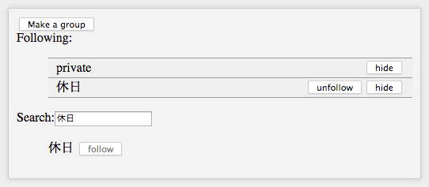
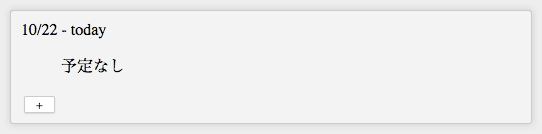

メインのカレンダーです。ここにフォローしているグループの予定が表示されます。
検索画面です。新しくグループを作成することも出来ます。
Followingにはいまフォローしているグループが表示されます。
unfollowを押すとフォロー解除します。hideを押すと、一時的にカレンダーにそのグループの予定を表示しないようにします。showを押すと再びカレンダーにそのグループの予定を表示します。
Searchにキーワードを入れると、下に候補が表示されます。followボタンは、フォローしていない場合のみ押せます。
詳細画面です。メインのカレンダーをクリックして選択した日の詳細を確認できます。また、ここから各イベントの編集、新規イベントの追加ができます。